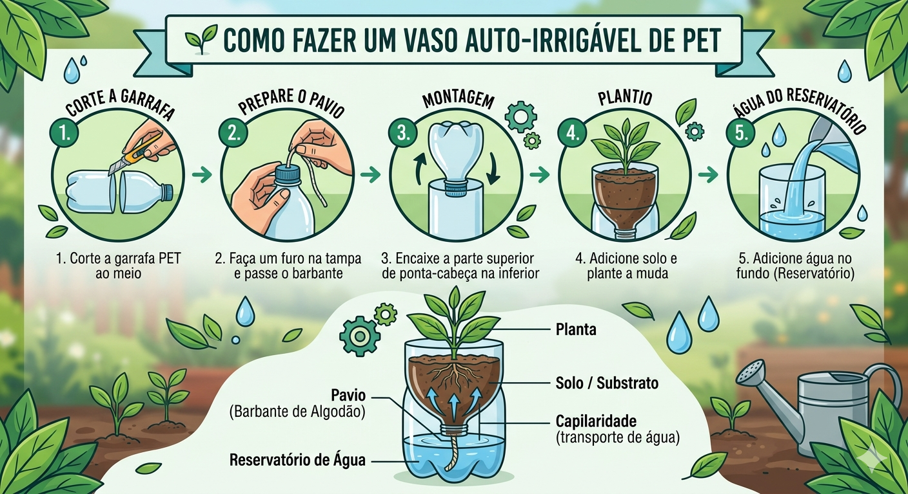
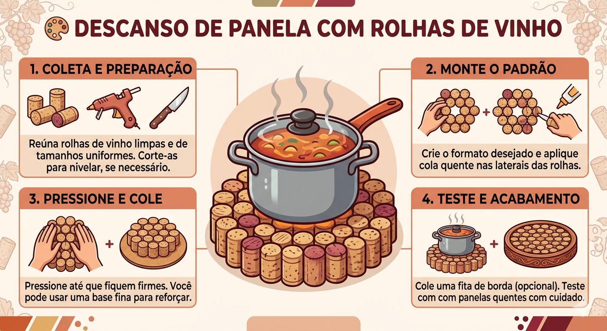
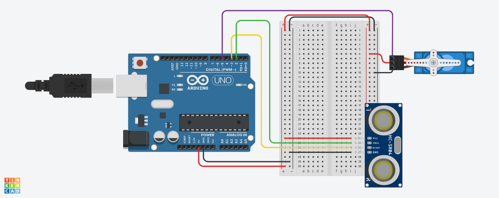

O Poder dos 3 Rs
A base da conservação ambiental em casa. Veja como começar:
1. Reduzir 📉
O foco é evitar a geração do lixo. Opte por comprar a granel, prefira produtos com refil e recuse sacolas plásticas se você puder carregar o item na mão ou em uma mochila.
2. Reutilizar ♻️
Dê uma nova vida ao que iria para o lixo. Potes de sorvete viram organizadores de gaveta, roupas antigas se tornam panos de chão e embalagens de vidro podem guardar temperos.
3. Reciclar 🗑️
A etapa final. Lave rapidamente as embalagens para não atrair insetos e separe o lixo seco (papel, plástico, vidro e metal) do lixo úmido (orgânico e banheiro).
Dicas Práticas de Economia 💧⚡
Economizando Água
- Água da Máquina: Colete a água do enxágue da máquina de lavar roupas para lavar o quintal.
- Revisão de Vazamentos: Uma torneira pingando desperdiça mais de 40 litros por dia.
- No Banho: Feche o chuveiro enquanto se ensaboa.
Economizando Energia
- Vilões do Stand-by: Tire da tomada micro-ondas e TVs quando não estiverem em uso.
- Luz Natural: Abra janelas e cortinas. Evite acender lâmpadas durante o dia.
- Ferro de Passar: Junte o máximo de roupas possível para passar tudo de uma vez.
Maker Raiz: Projetos com Recicláveis ✂️
🌱 Vaso Auto-irrigável de PET

Corte uma garrafa PET ao meio. A parte do bico fica de cabeça para baixo dentro da base com água. Passe um barbante pelo gargalo: ele puxará a água para a terra por capilaridade.
🎨 Descanso de Panela com Rolhas

Agrupe rolhas de vinho e cole as laterais formando um círculo. A cortiça é um excelente isolante térmico e protegerá a sua mesa das panelas quentes.
Cultura Maker: Arduino & Sensores 🔌
Quer elevar o nível? Você pode usar a tecnologia livre para criar automações incríveis e ajudar a natureza de forma super divertida.
🗑️ Projeto 1: Lixeira Automática

Objetivo: O "olho" da lixeira percebe quando sua mão chega perto e abre a tampa sozinha, facilitando o descarte higiênico.
// C++ code
//
#include <Servo.h>
long readUltrasonicDistance(int triggerPin, int echoPin)
{
pinMode(triggerPin, OUTPUT); // Clear the trigger
digitalWrite(triggerPin, LOW);
delayMicroseconds(2);
// Sets the trigger pin to HIGH state for 10 microseconds
digitalWrite(triggerPin, HIGH);
delayMicroseconds(10);
digitalWrite(triggerPin, LOW);
pinMode(echoPin, INPUT);
// Reads the echo pin, and returns the sound wave travel time in microseconds
return pulseIn(echoPin, HIGH);
}
Servo servo_5;
void setup()
{
servo_5.attach(5, 500, 2500);
}
void loop()
{
if (0.01723 * readUltrasonicDistance(2, 3) < 20) {
servo_5.write(90);
delay(1000); // Wait for 1000 millisecond(s)
} else {
servo_5.write(0);
}
}🌡️ Projeto 2: Termômetro Inteligente

Objetivo: Monitorar as mudanças de temperatura. Perfeito para falar sobre ondas de calor! Ele acende diferentes luzes de alerta dependendo de quão quente está o ambiente.
// C++ code
//
int seconds = 0;
void setup()
{
pinMode(A0, INPUT);
pinMode(2, OUTPUT);
pinMode(3, OUTPUT);
pinMode(4, OUTPUT);
}
void loop()
{
if ((-40 + 0.488155 * (analogRead(A0) - 20)) >= 20) {
digitalWrite(2, HIGH);
} else {
digitalWrite(2, LOW);
}
if ((-40 + 0.488155 * (analogRead(A0) - 20)) >= 25) {
digitalWrite(3, HIGH);
} else {
digitalWrite(3, LOW);
}
if ((-40 + 0.488155 * (analogRead(A0) - 20)) >= 30) {
digitalWrite(4, HIGH);
} else {
digitalWrite(4, LOW);
}
delay(10); // Delay a little bit to improve simulation performance
}